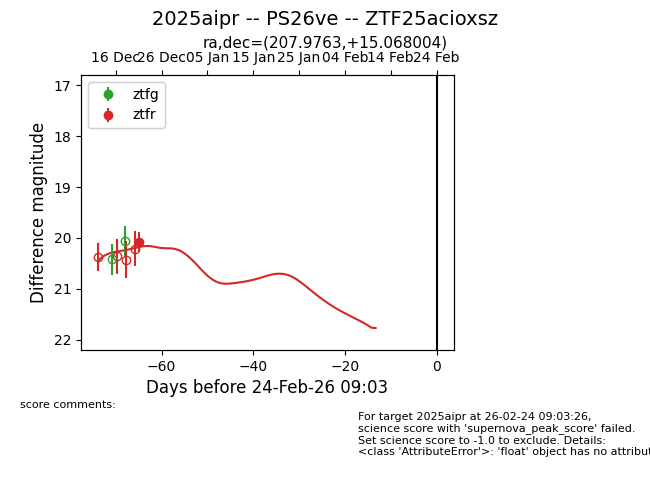
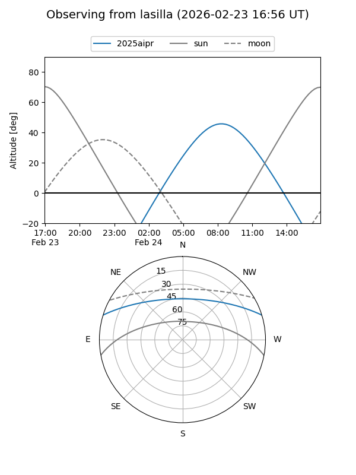
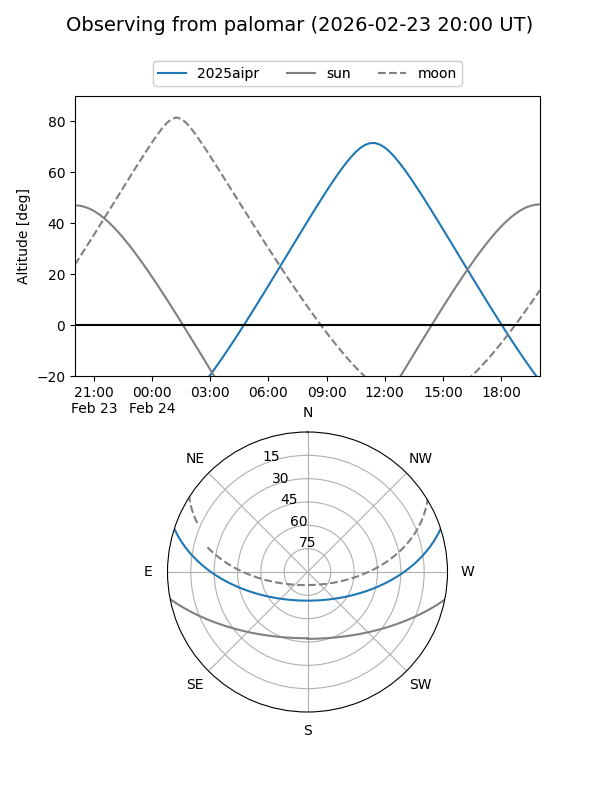

2025aipr
Target 2025aipr at 2025-12-31 17:00
Aliases and brokers:
FINK:
Lasair:
ALeRCE:
TNS:
YSE:
alt names
ZTF25acioxsz (ztf,fink_ztf)
2025aipr (tns,yse)
Coordinates:
equatorial (ra, dec) = 207.9763,+15.06800
equatorial (HMS+DMS) = 13:51:54.32,+15:04:04.82
galactic (l, b) = (355.3641,+71.47589)
Flags:
Photometry:
last ztfr=20.08
1 ztfr detections
Lightcurve

Visibility


Additional plots